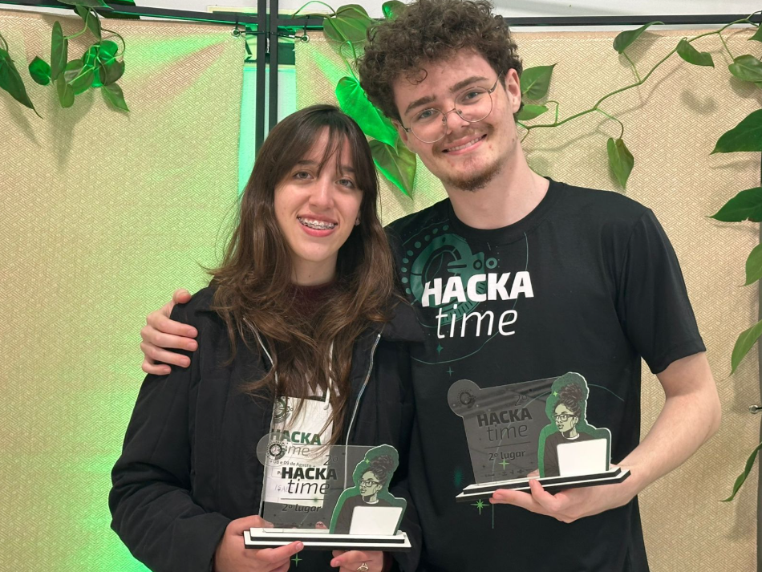

Hackatime – 2025
Participei do Hackatime, onde desenvolvi habilidades de comunicação e trabalho em equipe. Minha equipe conquistou o 3º lugar com o projeto GrowMoney.
Olá! Seja bem-vindo ao meu portfólio. Sou estudante de desenvolvimento front-end.
Role para baixo e descubra um pouco mais sobre mim e minha jornada no desenvolvimento web.
Sou estudante de desenvolvimento web, com grande interesse em front-end e na criação de aplicações que integram inteligência artificial. Tenho um perfil curioso, gosto de aprender coisas novas e participo ativamente de eventos de tecnologia, sempre buscando evoluir não apenas tecnicamente, mas também na minha comunicação.
Mais do que escrever código, procuro transformar ideias, sentimentos e conceitos em experiências digitais que façam sentido para quem interage. Acredito que design, código e inteligência artificial caminham juntos quando o objetivo é criar interfaces claras, sensíveis e verdadeiramente impactantes.
Participei do Hackatime, onde desenvolvi habilidades de comunicação e trabalho em equipe. Minha equipe conquistou o 3º lugar com o projeto GrowMoney.
Participei do Taquara Summit por dois anos consecutivos, um evento voltado à inovação e ao empreendedorismo, que fortaleceu ainda mais minha vontade de desenvolver e inovar.
Workshop promovido pela CRISDU Labs, onde aprendi sobre processos reais de desenvolvimento, uso prático de IA e a importância das soft skills.
Através da FEINTEC (CIMOL), conquistei uma credencial para a FEBIC em Santa Catarina com o projeto EPIPHANY – Jornada Digital para Reflexão sobre o Meio Ambiente.

Gráfico de conhecimento dinâmico alimentado por IA generativa, desenvolvido com React, FastAPI e Google Gemini.
Plataforma de catálogo e avaliação de filmes construída com a stack MERN e a API do TMDB.
Aplicação de to-do list inspirada no Efeito Borboleta, focada em crescimento pessoal por meio de pequenas ações consistentes.
Jogo desenvolvido na Unity com foco em conscientização ambiental, utilizando C# como linguagem principal.
Vamos criar algo com sentido.
.png)